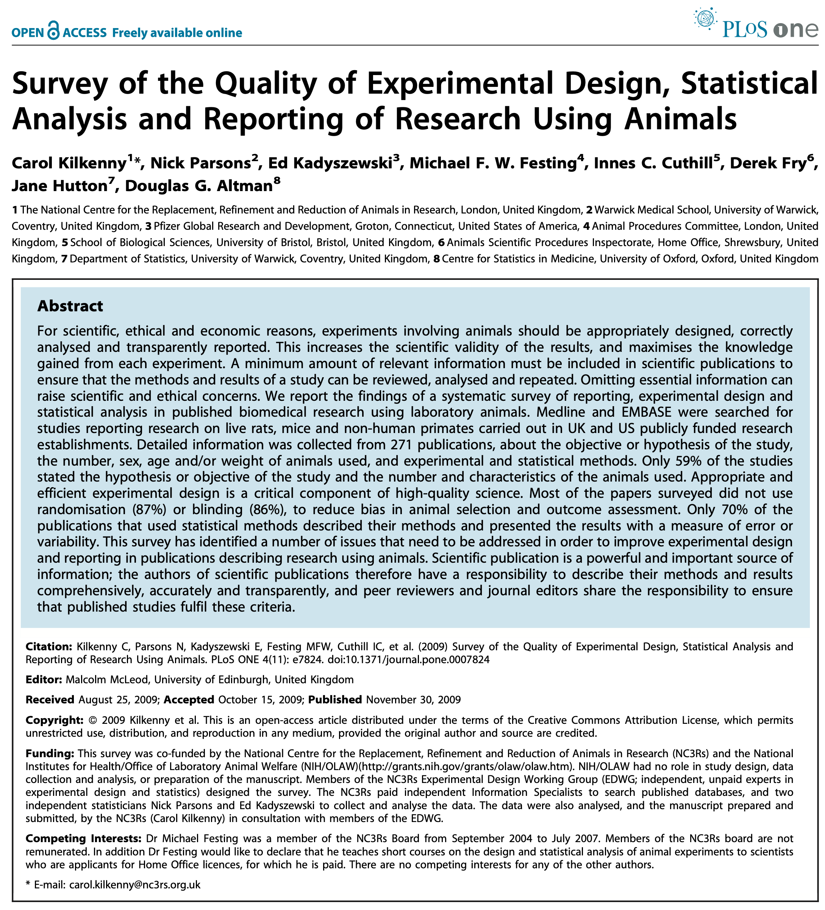
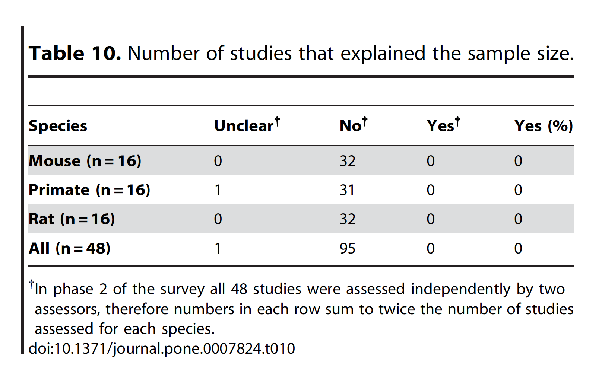
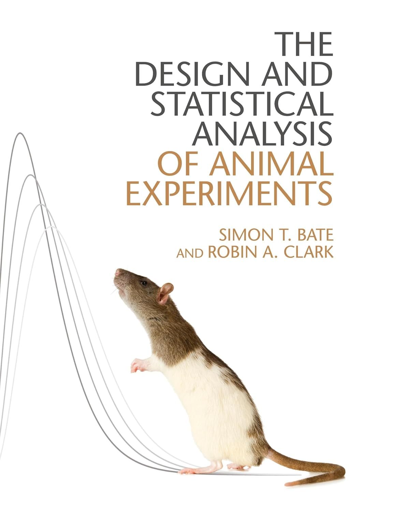

The 2009 NC3Rs systematic survey
All of this is important in its own right, but to see why it is so important that you understand and are able to apply these concepts, let’s consider the 2009 NC3Rs systematic survey of published experiments using animal subjects.
The importance of experimental design
“For scientific, ethical and economic reasons, experiments involving animals should be appropriately designed, correctly analysed and transparently reported. This increases the scientific validity of the results, and maximises the knowledge gained from each experiment. A minimum amount of relevant information must be included in scientific publications to ensure that the methods and results of a study can be reviewed, analysed and repeated. Omitting essential information can raise scientific and ethical concerns.” (@Kilkenny2009-cn)

The National Centre for the Replacement, Refinement, and Reduction of Animals in Research (NC3Rs) was established in 2004 as the UK’s national organisation for the 3Rs (Reduction, Replacement, Refinement). It works with scientists to replace the use of animals by developing new approaches and technologies or, where use of animals is unavoidable, to reduce the number of animals used in each experiment and to minimise any pain, suffering or distress that the animals may experience.
In 2009, the NC3Rs published a systematic survey (Kilkenny et al. (2009)) of the quality of reporting, experimental design, and statistical analysis of recently-published biomedical research using animals.
It did not make for pleasant reading.
Causes for concern 1
“Detailed information was collected from 271 publications, about the objective or hypothesis of the study, the number, sex, age and/or weight of animals used, and experimental and statistical methods. Only 59% of the studies stated the hypothesis or objective of the study and the number and characteristics of the animals used. […] Most of the papers surveyed did not use randomisation (87%) or blinding (86%), to reduce bias in animal selection and outcome assessment. Only 70% of the publications that used statistical methods described their methods and presented the results with a measure of error or variability.” (@Kilkenny2009-cn)

The state of the published literature around animal experiments was not good in 2009.
- 40% of studies did not state the hypothesis or objective of the experiment
- Most papers did not use randomisation or blinding, although this is an essential practice to avoid bias
- Only 70% of publications described their statistical methods at all
Causes for concern 2

- One of the most shocking pieces of information is that, of the 48 papers surveyed, not a single one explained why they used the number of animals that they did.
- We cannot therefore be assured that the number of animals used was chosen to minimise suffering, or to obtain a statistically justifiable result.
- These papers are published. They are written, and the experiments conducted, by “experienced scientists”
- Being an “experienced” or “published” scientist is clearly not a benchmark for good experimental design
Remember, these are “experienced,” “published” scientists in receipt of tens of thousands, maybe hundreds of thousands of pounds worth of funding. If you query their methods, they are likely to claim that having performed these experiments, published the outcomes, and received funding to do so, makes their opinion right and yours wrong. Resist this bullying. Always question how these numbers are decided upon and how the experiment is designed and performed. You are sometimes the experimental subjects’ only voice.
Very strong cause for concern
“Power analysis or other very simple calculations, which are widely used in human clinical trials and are often expected by regulatory authorities in some animal studies, can help to determine an appropriate number of animals to use in an experiment in order to detect a biologically important effect if there is one. This is a scientifically robust and efficient way of determining animal numbers and may ultimately help to prevent animals being used unnecessarily. Many of the studies that did report the number of animals used reported the numbers inconsistently between the methods and results sections. The reason for this is unclear, but this does pose a significant problem when analysing, interpreting and repeating the results.” (@Kilkenny2009-cn)
As scientists, you - yourselves - need to understand the principles behind the statistical tests you use, in order to choose appropriate tests and methods, and to use appropriate measures to minimise animal suffering and obtain meaningful results.
You cannot simply rely on the word of “experienced scientists” for this.
- The Kilkenny paper does propose solutions to this problem
- They require the use and reporting of straightforward statistical calculations
- Power calculations, which, given assumptions appropriate to the experiment, indicate how many experimental subjects are required to determine the result to a desired level of certainty.
- We will work through how to make these calculations in the workshop.
- It is up to you as scientists to maintain your integrity and that of the experiment, in abiding by good practice and choosing appropriate tests and methods.
The ARRIVE guidelines
The following year @Kilkenny2010-cp proposed the ARRIVE guidelines: a checklist to help researchers report their animal research transparently and reproducibly.
- Good reporting is essential for peer review and to inform future research
- Reporting guidelines measurably improve reporting quality
- Improved reporting maximises the output of published research

- Kilkenny and colleagues didn’t just highlight the problems and run away.
- In 2010 they proposed the ARRIVE guidelines for reporting animal research
- This takes the form of a checklist that enables good reporting of research, improving manuscript policy and maximising the output of research.
- In order to fulfil the guidelines, basic activities in experimental design - consideration of the use of both sexes, power calculations and so on - must be incorporated early in the research process.
ARRIVE guidelines highlightes
Many journals now routinely request information in the ARRIVE framework, often as electronic supplementary information. The framework covers 20 items including the following (@Kilkenny2010-cp):
- Objectives: primary and any secondary objectives of the study, or specific hypotheses being tested
- Study design: brief details of the study design, including the number of experimental and control groups, any steps taken to minimise the effects of subjective bias, and the experimental unit
- Sample size: the total number of animals used in each experiment and the number of animals in each experimental group; how the number of animals was decided
- Statistical methods: details of the statistical methods used for each analysis; methods used to assess whether the data met the assumptions of the statistical approach
- Outcomes and estimation: results for each analysis carried out, with a measure of precision (e.g., standard error or confidence interval).
- The ARRIVE guidelines have been quite successful
- Many journals now request information about the experiment in the ARRIVE framework
- Key steps are included that were highlighted as frequently absent in the 2009 study
- The experiment’s objectives
- How the study was designed to minimise noise and systematic biases
- How the sample size was calculated and justified
- What statistical methods were used for analysis and why they are appropriate
- Reporting of outcomes with estimates of variation/precision
A vital step
“A key step in tackling these issues is to ensure that the next generation of scientists are aware of what makes for good practice in experimental design and animal research, and that they are not led into poor or inappropriate practices by more senior scientists without a proper grasp of these issues.”
@Bate_Clark_2014

- The NC3Rs study and ARRIVE guidelines have been a vital step in changing the research culture from accepting the word of “experienced” senior scientists to good, objective scientific practice.
- But there’s still a long way to go
- I can strongly recommend the Bate and Clark book as an excellent starting point for if you want to become competent in experimental design and analysis in this context.